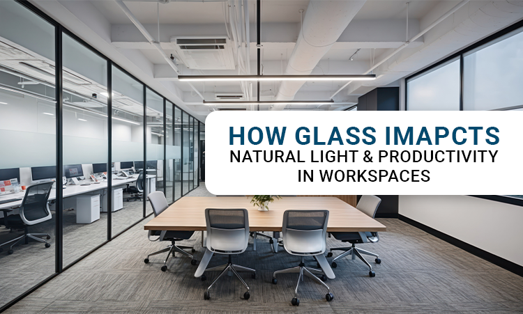

How Glass Impacts Natural Light & Productivity in Workspaces?
Step into any modern workspace today, and you will notice how much Glass has become a part of its design. From tall windows to clean partitions, Glass for office interiors is not just about looks. It changes how people feel and how they work.
Offices used to be packed with walls and fluorescent lights. They got the job done, but they often felt heavy and dull. Now, workspaces are built to feel brighter, more open, and more natural. Natural light in workspace design has become a priority because it supports both comfort and focus. Natural light in offices can increase creativity by 15%; linked to an 18% drop in sick days.
Glass plays a big part in this. It allows light to flow through, brings in warmth, and helps create a space where people actually want to spend time.
The Connection Between Glass and Productivity
The link between Glass and productivity is simple. People work better when they feel good in their environment. Light affects mood, alertness, and energy levels. When sunlight moves through Glass, it lifts the entire atmosphere of a room.
A report on the impact of natural light on workplace mood and efficiency found that employees who sit near windows are often more focused and in a better frame of mind. Natural light improves concentration and reduces fatigue, which is why so many new office layouts now include glass partitions for offices.
These partitions allow teams to have private areas without losing openness. Even meeting rooms feel more relaxed when there is some light filtering in. When people can see outside or even across the office, they feel less boxed in and more connected to their work. A lot of employees complain that it is so hard for them to see a sunset if it's not a weekend. But with natural light they are always in the real-world and not boxed.
Glass partitions allow teams to work in private areas without feeling like working in a prison. Even meeting rooms start feeling more confident when they have natural light in them.
The Benefits of Natural Light in Offices
The benefits of natural light in offices reach far beyond energy savings. Natural light helps the body stay in rhythm, keeping employees alert during the day and improving rest at night. It can even improve overall well-being, reducing stress and irritability.
Smart office glass design makes this possible. Instead of relying completely on ceiling lights, designers now use glass walls or panels to spread daylight evenly. This creates a calm, balanced brightness that helps employees stay productive without straining their eyes.
Modern Office Design Trends with Glass
One of the biggest modern office design trends is the focus on transparency. Businesses have realised that open spaces build trust and make communication easier. Glass supports that by opening up rooms visually while still giving people some privacy.
The importance of transparent office design also lies in its message. A glass wall says the team is approachable, that decisions are visible, and that collaboration matters. It makes a small office feel larger and keeps people mentally connected, even if they are not sitting side by side.
Toughened glass gives designers and builders the freedom to create anything from sleek modern spaces to richly detailed interiors. Its clear surface allows sunlight to flow in and keeps views open, bringing a natural sense of brightness and connection to the surroundings.
Choosing the Right Glass for Office Interiors
Selecting the best glass types for office interiors depends on how each space is used.
Clear Glass works well for open areas that need brightness and visibility. Frosted Glass is a good choice for cabins and meeting rooms where privacy matters. Patterned or textured Glass can add character in reception zones or creative studios
More companies now choose energy-efficient Glass for buildings because it keeps the space cool and comfortable while still letting daylight in. This type of glass filters heat and reduces energy costs, which is useful in places with long sunny seasons.
When the right materials are chosen, Glass does more than decorate a room. It becomes a silent part of how people experience comfort at work.
Daylight Optimisation and Employee Wellbeing
Designers are paying closer attention to daylight optimisation with Glass. It is not just about the size of the window but about how the light moves through the space during the day.
By planning layouts carefully, architects can make sure every part of the office gets some form of daylight. This approach supports how glass design improves employee productivity because a well-lit space naturally keeps energy levels stable.
Employees who work in evenly lit spaces tend to feel less drained and more focused. They are also more likely to stay motivated when their surroundings feel fresh and open.
Using Glass to Enhance Workspace Lighting
Good lighting is not just about brightness. It is about how light interacts with space. Using Glass to enhance workspace lighting helps balance natural and artificial light so that no area feels too dark or too harsh.
Glass walls and doors allow sunlight to reach deep corners that might otherwise be hidden. Even small details, like glass panels between desks, make a big difference in how open and connected an office feels.
When light moves freely, people move more freely too. That is what makes Glass for office interiors such a practical choice in today’s workplaces.
Energy and Sustainability Benefits
Sustainability has become part of modern design thinking. Energy-efficient Glass for buildings supports this by cutting down the need for artificial cooling and lighting. It allows natural light to enter while keeping excess heat outside, which helps maintain a steady indoor temperature.
When paired with smart sensors or automated blinds, Glass can even adjust lighting levels throughout the day. This not only reduces energy bills but also supports eco-friendly building standards that many businesses now follow.
The Bigger Picture: Light, Design, and People
The importance of transparent office design is beyond looks; it also plays a huge role in how people think and work. When you give your employees a transparent workspace, you are clearly telling them you always have someone to help you out with a raised hand, but nobody would interrupt your private desk.
Transparency in design also mirrors transparency in culture. Glass partitions provide a personal space for employees so they can think more creatively without worrying about someone always watching them.
Conclusion
Glass has changed how we experience modern workplaces. It brings natural light to workspace settings, shapes mood, and supports focus. From glass partitions for offices to energy-efficient glass for buildings, every choice plays a part in making offices feel better to work in.
The benefits of natural light in offices are clear. People feel happier, work better, and stay more engaged when light becomes a part of their daily environment.
With office glass design you are not just renovating your office you are giving your employees a new home because they are going to spend the majority of time here. Office renovation is not swiping modern office design trends but it is giving your employees a place where they can be themselves.